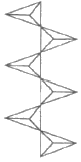
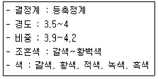
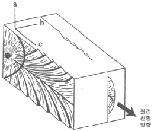
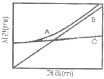
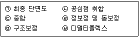

1과목: 암석학 및 광물학
1. 현무암과 같은 고철질 광물이 풍부한 암석이 광역변성작용을 받았을 때 가장 고변성도의 변성분대에서 나타나는 변성광물은?
2. 북한산에서 채취한 화강암의 암석박편에서 정누대구조(normal zonal structure)를 보여주는 사장석의 결정이 관찰되었다. 이 결정의 중심부에서 연변부로 가면서 함량이 상대적으로 증가하는 원소는?
3. 퇴적층의 표면을 따라 유수 또는 물과 함께 운반되는 물체에 의해 긁히거나 침식을 받아 형성된 침식구조에 해당하는 것은?
4. 직경 64mm 이상의 둥근 쇄설물로 주로 이루어진 세립질의 화성쇄설암은?
5. 화성암을 구성하고 있는 조암광물의 크기(입도)는 주로 무엇에 의하여 결정되는가?
6. 퇴적물이 퇴적된 이후에 받는 모든 물리적, 무기화학적, 생화학적인 변화를 총칭해서 말하는 것은?
7. 점성이 가장 큰 마그마(magma)에서 형성된 암석은?
8. 섬장암과 섬록암 사이의 중간적인 조성을 가진 심성암으로서 거의 같은 양의 알칼리장석과 사장석을 포함하는 암석은?
9. 바로비안 변성상 계열의 변성상 변화를 나타낸 것은?
10. 편마암에 대한 설명으로 옳은 것은?
11. 다음 중 완전고용체(연속고용체)에 속하는 광물은?
12. 자연에서 광물이 성장할 때 불규칙한 성장을 하게 되면 독특한 모양을 가지게 되는 경우가 있다. 광물 결정의 성장이 우각이나 능에서 주로 일어날 때 만들어지는 불완전한 결정은?
13. 대장상(enantiomrphy)에 관한 설명으로 옳은 것은?
14. 다음 중 안정된 이온결정이 갖추어야 할 다섯가지 조건을 제시하는 이론은?
15. 다음 중 불투명 광물을 반사광편광현미경으로 관찰하여 식별할 때 이용하는 광물의 물리적 성질이 아닌 것은?
16. 어떤 광물내에서 빛의 전달속도가 200,000km/sec 였다면 이 광물의 굴절률은 얼마인가? (단, 공기 중에서 빛의 속도는 300,000km/sec이다.)
17. 다음 중 면심공간격자의 단위포 함량(Z)은?
18. 규산염광물은 기본 구조단위인 SiO4 사면체의 결합 방식에 따라 구분한다. 아래 그림은 사면체가 한 꼭지점 산소를 공유하면서 한 방향으로 연결된 사슬구조를 이룬다. 이를 이노규산염 광물 또는 단쇄형 광물이라 하며, 휘석이 그 예이다. 이 때 Si:O의 비는 얼마인가?

19. 다음과 같은 특징을 가진 광물은 어느 것인가?

20. 주기율표에 있어서 각 주기의 첫째 자리, 즉, la족에 속하는 원소들로서 Li, Na, K, Rb, Cs, Fr 등이며, 화합물에서는 원자가가 +1이다. 일반적으로 열과 전기에 대하여 전도성이 높고, 금속광택, 낮은 경도, 전성, 연성 등이 특징인 원소들을 무엇이라 부르는가?
2과목: 구조지질학
21. 판의 이동속도를 추정하는데 이용될 수 없는 것은?
22. 중생대 백악기 퇴적 분지가 아닌 것은?
23. 주향과 경사가 N35°E/50°NW인 단층면에 나타날 수 없는 단층조선의 선주향 경사방향(plunge)은?
24. 대양저 산맥(ocean ridges)에 대한 설명 중 틀린 것은?
25. 다음은 Hodgson(1961)의 이상적인 절리발달양상을 보여주는 그림이다. 그림에서 a, b, c 세 주응력축의 이름을 순서대로 옳게 나열한 것은? (단, σ1은 최대주응력, σ2는 중간주응력, σ3는 최소주응력이다.)

26. 해양판이 맨틀로 하강하는 섭입대(subduction zone)에서 약 700km 깊이까지 심발지진의 발생이 가능한 원인은?
27. 다음의 지구조 중 성격이 나머지 셋과 다른 것은?
28. 지질시대를 구분하는데 가장 중요하게 취급되는 지질구조는?
29. 최대 주응력이 140MPa, 최소 주응력이 60MPa일 때 최소 주응력축과 이루는 각(θ)이 40°인 면에 작용하는 수직응력(σn)과 전단응력(σs)의 합은 얼마인가?
30. 지질시대의 층서구분 단위와 이들의 표시법이 적절하게 연결된 것은?
31. 정단층에 의해 주로 형성되는 지질 구조는?
32. 우리나라의 동해(East Sea)는 어느 것에 해당되는가?
33. 하천의 발달 형태가 직선 또는 직각을 이루고 있는 부분이 있다. 이는 어느 것의 영향을 받아 형성된 것인가?
34. 트러스트 단층(thrust fault)과 관련된 설명으로 옳은 것은?
35. 지구의 부피에 있어 가장 많은 부분을 차지하는 것은?
36. 다음에 나열된 동위원소들 중 가장 젊은 지질연대를 측정할 수 있는 것은?
37. 습곡의 중첩구조 중 선행 습곡구조가 수평선의 습곡축을 가진 횡와습곡인 경우, 선행 습곡구조의 습곡축과 직각을 이루는 수평선을 습곡축으로 하고, 수직의 습곡 축면을 가진 2차 습곡에 의해 발달할 수 있는 간섭 구조는 무엇인가?
38. 대륙이동에 관련된 학성 또는 이론의 발전과정을 옳게 나열한 것은?
39. 지각판의 경계부(plate boundary)가 아닌 것은?
40. 산사태의 발생 원인에 해당하지 않는 것은?
3과목: 탐사공학
41. 방사능 탐사에 대한 설명으로 옳지 않은 것은?
42. 굴절법 탄성파 탐사에서 숨은층 문제가 발생하는 원인이 아닌 것은?
43. 전류전극간의 간격을 전위전극간의 간격보다 매우 크게 하고 전류전극의 중심에 전위전극을 위치시켜 수직적인 전기비저항의 변화를 탐지하는데 편리한 특징을 갖는 전기탐사의 전극 배열법은?
44. 중력 측정지점은 기준면으로부터 2477m 높이에 위치하고 있다. 측정 중력값 및 표준 중력값은 각각 981.9567gal과 982.7270gal 이었다. 프리에어 이상은 얼마인가?
45. 지하투과 레이다 탐사(GPR)에서 반사계수는 다음 중 어느 물성과 관련이 있는가?
46. 백분율 주파수 효과(Precent frequency effect)가 사용되는 물리탐사법은?
47. 지구화학탐사에서는 토양을 기후에 따라 분류할 수 있는데 성숙토양 단면이 잘 발달되며 토양의 성질은 주로 기후와 식생에 의해 결정되는 토양은?
48. 물리검층으로 구한 유정의 검층자료로부터 저류가능 지층을 판별하기 위해 필요한 정보가 아닌 것은?
49. 다음은 탄성파 발생원이다. 해상 탐사용으로 가장 많이 사용되는 비폭발성 에너지원은?
50. 검층기록이 지층의 셰일함량을 주로 대표하여 셰일기선(shale base line)을 찾는데 이용되는 물리검층법은?
51. 지열의 특성에 대한 설명으로 옳지 않은 것은?
52. 시추공 화상처리시스템(BIPS)과 시추공 텔레뷰어(Borehole Televiewer)에 대한 설명으로 옳지 않은 것은?
53. 어느 지역에서 굴절법 탄성파 탐사를 실시하여 제1층의 탄성파 속도가 1000m/s, 제2층의 탄성파 속도가 2000m/s를 보이는 수평 2층 구조임을 확인하였다. 이 때 절편시간(intercept time)이 20ms일 때 제1층의 두께는 얼마인가?
54. 다음 전자탐사법 중 탄성파 탐사와 유사한 방법으로 탐사자료를 획득하고 처리하는 방법은 무엇인가?
55. 주파수영역 전자탐사에 대한 설명으로 옳은 것은?
56. 다음 중 친철원소에 해당하는 것은? (단, Goldschmidt의 분류에 의함)
57. 중력탐사 방법의 적용으로 옳지 않은 것은?
58. 암석이 잔류자기를 갖게 되는 현상을 자연잔류자화라고 하는데, 자연잔류자화 가운데 자성물질이 높은 온도로부터 큐리 온도를 거쳐 서서히 식어갈 때 외부 자기장에 의하여 강하고도 안정된 잔류자기를 얻게 되는 현상을 무엇이라고 하는가?
59. 직접파, 반사파, 굴절파가 지오폰에 도달하는 것을 나타낸 주시곡선에서 A, B, C는 순서대로 각각 무엇인가? (단, 단일 경계면 위에서 탄성파 탐사를 수행하고, 지오폰을 일직선상에 파원으로부터 일정한 간격을 두고 전개하였다고 가정한다.)

60. 반사법 탄성파 탐사자료의 처리 계통 순서를 바르게 배열한 것은?

4과목: 지질공학
61. 풍화에 따른 암석의 물리적ㆍ역학적 변화에 대한 설명으로 옳지 않은 것은?
62. 연약지반 개량공법으로 사용되는 분사교반공법은 어느 원리를 이용한 것인가?
63. 사면안정공법 중 안전율증가법(억지공)이 아닌 것은?
64. 삼축압축시험에 관한 설명으로 옳은 것은?
65. 시추를 통하여 불연속면의 방향성 자료를 얻을 수 있는 시험은?
66. 지형의 특성에 따라 충적층을 다음과 같이 구분할 때 일반적으로 층적층의 두께가 가장 두꺼운 지층은?
67. RMR(Rcok Mass Rating)분류법을 근거로 하여 SMR(Slope Mass Rating)값을 획득할 때 고려되는 요소가 아닌 것은?
68. 어떤 피압대수층의 공극률이 32%, 대수층 구성입자의 압축률은 1.8×10-8m2/N, 물의 압축률은 4.6×10-10m2/N이다. 이 대수층의 비저류계수(Specific storage)는? (단, 물의 밀도는 1,000kg/m3, 중력가속도는 9.8m/s2)
69. 토질시험법 중 사운딩(sounding)에 대한 설명으로 옳지 않은 것은?
70. 암반의 시간 의존적인 특성으로 옳지 않은 것은?
71. 분급도가 양호하며 세립토의 함량이 5% 미만인 모래를 통일분류법(USCS)에 의해 분류할 때 올바르게 표현한 것은?
72. 어느 흙 속에 최대주응력 30t/m2, 최소 주응력 10t/m2 이 작용하고 있다. 이 흙에 작용하는 최대전단응력의 값은 얼마인가?
73. Q-system에 의한 암반분류에서 RQD가 5%, 절리군의 수에 의한 계수 Jn=15, 절리의 거칠기 계수 Jr=1.5, 절리의 변질 계수 Ja=1.0, 지하수 보정 계수 Jw=1.0, 응력저감계수 SRF=5.0일 때 Q 값은?
74. 공극비 0.7, 입자의 비중이 2.65인 흙의 수중단위중량은 얼마인가?
75. 터널의 안전하고 효율적인 시공을 위해 터널의 지보재와 병용하여 사용되는 보조공법 중 천단부의 안정을 위한 지반강화를 목적으로 적용하는 공법이 아닌 것은?
76. 암반 사면의 공학적 지질도를 작성하는데 있어서 중요한 기재사항에 해당하지 않는 것은?
77. 시추조사법에 대한 설명으로 옳지 않은 것은?
78. 흙의 연경도(consistency)에 대한 설명 중 틀린 것은?
79. 흙의 투수계수를 측정할 수 있는 시험방법에 해당하지 않는 것은?
80. 지반침하의 형태에 따른 분류 중 골형 침하(trough subsidence)의 특징으로 옳지 않은 것은?
5과목: 광상학
81. 건설분야에 이용되는 골재자원의 필요조건으로 옳지 않은 것은?
82. 선캄브라아기의 염기성 화성암류의 분화에 의한 정마그마 광상에 해당하는 것은?
83. 우리나라의 우라늄광상이 가장 많이 산출되는 지층은?
84. 함금석영맥이 지표에 노출되어 적갈색으로 된 것은 무엇인가?
85. 마그마 동화작용(Assimilation)에 대한 설명으로 맞는 것은?
86. 일반적으로 금속광상 탐사를 위한 초기탐사 단계에서 조사지역내 금속광상의 부존 가능성 파악에 유용한 조사대상인 모암변질작용(변질대)의 형성원인에 해당되지 않는 것은?
87. 우리나라의 천열수형 금ㆍ은 광상에 대한 설명으로 옳지 않은 것은?
88. 광상에서 광물생성의 시간적 순서를 의미하는 용어는?
89. 심해저 망간단괴에서 산출되지 않는 성분은?
90. 기성광상에서의 모암변질 작용에 해당하는 것은?
91. 우리나라의 광상 중에서 대부분의 동(Cu)광상은 어느 광화대에 주로 분포하고 있는가?
92. 벤토나이트 광상에 대한 설명으로 옳지 않은 것은?
93. 석회암 중에 부존하는 금속광상의 광체 중에 석회암의 고립핵이 남아있고 이 고립핵에 있는 층리가 광체주변의 것과 연속성이 일치한다면 이것은 어떤 광상인가?
94. 금속제련의 주 대상인 알루미늄 광석은 대부분 수산화알루미늄에 해당된다. 다음 중 수산화알루미늄에 해당되는 함알루미늄 광석광물이 아닌 것은?
95. 유체포유물(fluid inclusion)이 제공하는 광상에 대한 정보에 해당하지 않는 것은?
96. 우리나라의 페그마타이트광상에서 주된 산출광종이 아닌 것은?
97. 마그마가 고결되면서 조암광물이 정출되면 휘발성분이 집중된다. 이런 휘발성분은 마그마에 포함되어 있는 금속성분과 결합하여 휘발성화합물이 된다. 다음 중 대표적인 휘발성분에 해당되지 않는 것은?
98. 우리나라에서 연-아연을 산출하는 대표적인 광상은 연화광산이다. 이 광산은 어떤 종류의 광상에 속하는가?
99. 우리나라에서 대규모 석회석광상을 배태하고 있는 지층의 지질시대는?
100. 표성부화광상에 대한 설명으로 옳지 않은 것은?